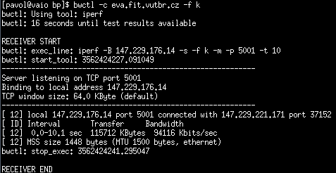
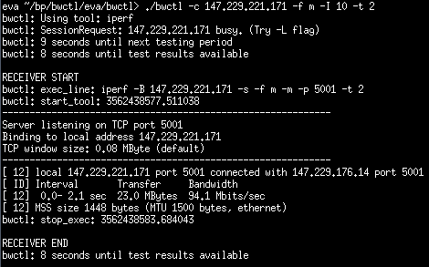

BWCTL
BWCTL je terminálová aplikácia, ktorá pou¾íva ne meranie externé nástroje. Medzi tieto nástroje patrí: Iperf, Nuttcp a Thrulay. Rovnaké výsledky z meraní získame aj priamym pou¾itím jednotlivých nástrojov. Výhodou pou¾itia tohto nástroja je, ¾e poskytuje k daným utilitám rovnaké rozhranie. Taktie¾ ponúka mo¾nos» autentifikácie pri testovaní. Tento nástroj doporuèujeme pou¾íva» pri rozsiahlej¹om a dlhodobom testovaní.Zdroje a základne spustenie
Domovská stránkaManuál
Link na stiahnutie - Pou¾itá verzia 1.4
Architektúra klient-server, bwctl, bwctld.
Príklad základného spustenia klienta a servera:
$ bwctl -c <adresa>
$ bwctld -Z
Vy¾aduje synchronizovaný èas pomocou NTP - Network Time Protocol.
Uká¾ka testov
Test TCP priepustnosti,
-f k zmení jednotky výpisov
na kbps.
$ bwctl -c adresa -f k

Test TCP priepustnosti, opakované spustenie testu ka¾dých 10 sekúnd na 2 sekundy.
$ bwctl -c adresa -f m -I 10 -t 2

Nekorektné správanie
Pri testovaní sa vyskytovali problémy pri spustení v UDP móde. Väè¹inou nemohlo by» naviazané spojenie. S prepínaèom
-I nastávala
situácia, ¾e klient v niektorých periódach nemohol naviaza» spojenie
s démonom na vzdialenej stanici. Vypisovaná hlá¹ka bola
SessionRequest: host busy. (Try -L flag).
Vybrané prepínaèe
| Parameter | Popis |
|---|---|
| Základne | |
-h |
výpis nápovedy |
-V |
výpis verzie |
-a syncfuzz |
povolí testovanie bez NTP démona |
-T <program> |
urèí nástroj pre testovanie, mo¾né voµby sú iperf, nuttcp a thrulay |
| Nastavenie spojenia | |
-4 |
pou¾ije IPv4 adresu, (implicitne preferuje IPv6) |
-6 |
vynúti pou¾itie IPv6 adresy |
-c <adresa> |
adresa alebo doménové meno stanice, ktorá bude prijíma» dáta |
-s <adresa> |
adresa alebo doménové meno stanice, ktorá bude posiela» dáta |
| Riadenie testovania | |
-I <èíslo> |
èasový interval v sekundách v ktorom bude periodicky spú¹»a» testovanie |
-n <èíslo> |
povolí spustenie urèitého poètu testov (pou¾itie s
-I) |
| Parametre pre bwctld | |
-c <adresa> |
adresár s konfiguraènými súbormi |
-Z |
spustí server na popredí |